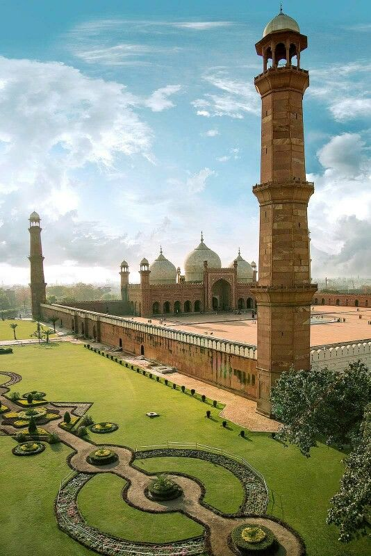
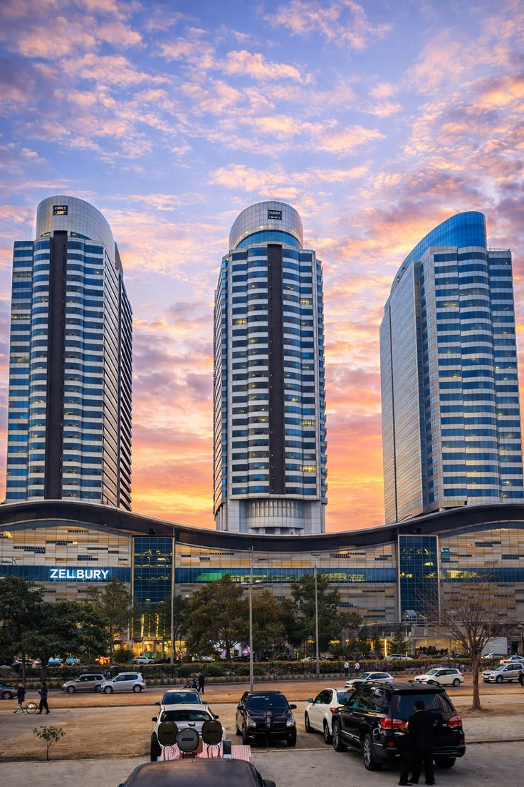
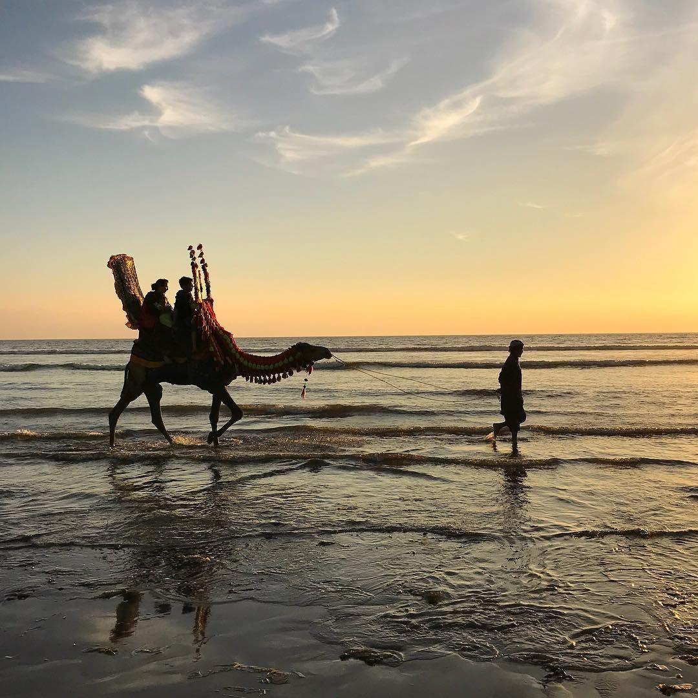
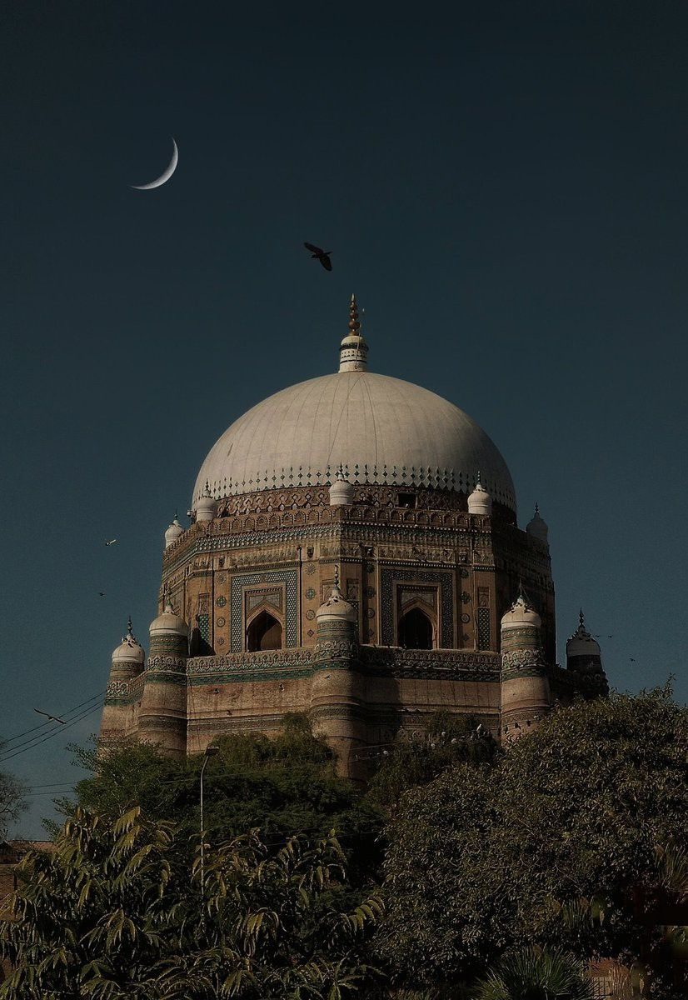

Lahore
Punjab Province
Known as: City of Gardens
Best Time: October - March
Rich history, stunning Mughal architecture, and delicious food scene.
Top Attractions:
- Badshahi Mosque
- Lahore Fort
- Shalimar Gardens
- Walled City
Distance from Islamabad: 350 km

Islamabad
Federal Capital
Known as: City of Peace
Best Time: March - May, September - November
Modern capital nestled against the Margalla Hills with clean streets and green spaces.
Top Attractions:
- Faisal Mosque
- Margalla Hills
- Rawal Lake
- Pakistan Monument
Distance from Lahore: 350 km

Karachi
Sindh Province
Known as: City of Lights
Best Time: November - February
Pakistan's largest city, famous for beaches, food, and vibrant culture.
Top Attractions:
- Clifton Beach
- Faisal Mosque
- Pakistan Monument
- Karachi Zoo
Distance from Lahore: 1,200 km

Multan
Punjab Province
Known as: City of Saints
Best Time: November - February
Ancient city with Sufi heritage, stunning shrines, and spiritual significance.
Top Attractions:
- Shah Rukn-e-Alam Shrine
- Fort of Multan
- Ghakhar Mandi
- Multan Museum
Distance from Lahore: 500 km

Swat Valley
KP Province
Known as: Switzerland of Pakistan
Best Time: May - September
Lush green valleys, crystal clear rivers, and adventure sports haven.
Top Attractions:
- Malam Jabba
- Kalam Valley
- Mingora City
- White Peak
Distance from Peshawar: 170 km

Hunza Valley
Gilgit-Baltistan
Known as: Land of the Healthy
Best Time: May - September
Stunning alpine valley famous for longevity of residents and breathtaking scenery.
Top Attractions:
- Karakoram Highway
- Baltit Fort
- Attabad Lake
- Eagle's Nest
Distance from Islamabad: 800 km